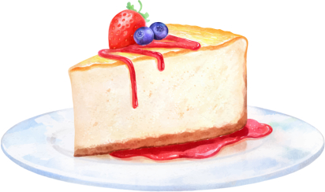

Fruit Cheesecake
This red berry cheesecake recipe is simply delicious! The combination of the sweetness of the strawberry with the slightly acidic flavor of the blueberry creates a fresh and balanced dessert. Moreover, the creamy texture of the cheesecake contrasts perfectly with the crunchiness of the cookie base. If you are looking for an easy dessert to make that will impress your guests, this is the ideal recipe.
Preparation
Ingredients- 200g of cornstarch biscuits
- 100g of butter
- 300g of cream cheese
- 1 can of sweetened condensed milk
- 1/2 cup of lemon juice
- 1 tablespoon of unflavored gelatin powder
- 1 cup of chopped strawberries
- 1 cup of blueberries
- Crush the cookies and mix with the melted butter. Line a pan and place it in the refrigerator.
- Beat the cream cheese, condensed milk, and lemon juice. Add the dissolved gelatin.
- Pour over the cookie base and refrigerate for 2 hours.
- Top with fruits and serve chilled.